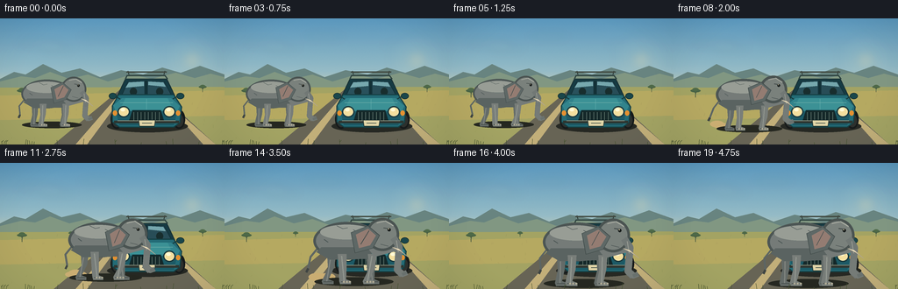
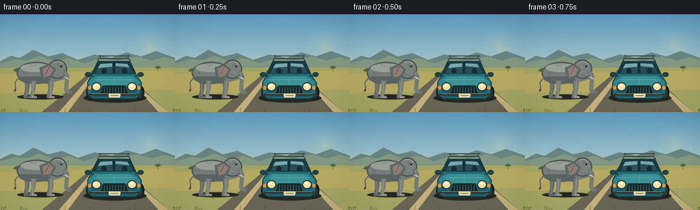

CODING AGENTS AS PIXEL WORLD MODELS
traex/GPT-5.6-Sol · dynamic_spatial_relationship_0066
点击播放 · 原生 RGB 像素
逐轮保存的候选
回放视频、检查图与代码变化。
每份候选均可单独播放。实际图片检查记录在下方工具轨迹中。
候选 01播放与检查图
点击播放 · 原生 RGB 像素


展开代码变化
--- 上一保存版本
+++ 本次保存版本
@@ -0,0 +1,322 @@
+from pathlib import Path
+import math
+import json
+import numpy as np
+from PIL import Image, ImageDraw, ImageFilter
+import artifact_io
+
+CASE_DIR = Path(__file__).resolve().parent
+SPEC = json.loads((CASE_DIR / "task_spec.json").read_text())
+W, H = int(SPEC["width"]), int(SPEC["height"])
+N = int(SPEC["frames"])
+SS = 4
+CW, CH = W * SS, H * SS
+rng = np.random.default_rng(6601)
+
+
+def sc(v):
+ return int(round(v * SS))
+
+
+def pts(seq):
+ return [(sc(x), sc(y)) for x, y in seq]
+
+
+def box(b):
+ return tuple(sc(x) for x in b)
+
+
+def ellipse(d, b, fill, outline=None, width=1):
+ d.ellipse(box(b), fill=fill, outline=outline, width=sc(width) if outline else 1)
+
+
+def polygon(d, p, fill, outline=None, width=1):
+ d.polygon(pts(p), fill=fill)
+ if outline:
+ d.line(pts(list(p) + [p[0]]), fill=outline, width=sc(width), joint="curve")
+
+
+def line(d, p, fill, width=1, joint="curve"):
+ d.line(pts(p), fill=fill, width=max(1, sc(width)), joint=joint)
+
+
+def smoothstep(x):
+ x = min(1.0, max(0.0, x))
+ return x * x * (3.0 - 2.0 * x)
+
+
+def background():
+ # Sky with a warm horizon and subtle film-like color variation.
+ y = np.linspace(0, 1, CH)[:, None, None]
+ top = np.array([90, 151, 190], dtype=float)[None, None, :]
+ mid = np.array([176, 204, 204], dtype=float)[None, None, :]
+ low = np.array([247, 207, 142], dtype=float)[None, None, :]
+ yy = np.clip(y / 0.62, 0, 1)
+ sky = top * (1 - yy) + mid * yy
+ warm = np.clip((y - .42) / .46, 0, 1)
+ sky = sky * (1 - warm) + low * warm
+ sky = np.repeat(sky, CW, axis=1)
+ # Very restrained deterministic grain keeps broad gradients organic.
+ grain = rng.normal(0, 0.75, (CH, CW, 1))
+ arr = np.clip(sky + grain, 0, 255).astype(np.uint8)
+ im = Image.fromarray(arr, "RGB")
+ d = ImageDraw.Draw(im)
+
+ # Sun glow and wispy clouds.
+ glow = Image.new("RGBA", (CW, CH), (0, 0, 0, 0))
+ gd = ImageDraw.Draw(glow)
+ for r, a in [(31, 5), (23, 8), (16, 13), (10, 24)]:
+ ellipse(gd, (219-r, 48-r, 219+r, 48+r), (255, 224, 152, a))
+ ellipse(gd, (215, 44, 223, 52), (255, 237, 188, 115))
+ for cx, cy, rx, ry, alpha in [
+ (45,29,25,3,20),(66,34,19,2.4,16),(113,21,23,2.5,13),(198,31,18,2.2,11)]:
+ ellipse(gd, (cx-rx,cy-ry,cx+rx,cy+ry), (245, 246, 230, alpha))
+ glow = glow.filter(ImageFilter.GaussianBlur(sc(5)))
+ im = Image.alpha_composite(im.convert("RGBA"), glow).convert("RGB")
+ d = ImageDraw.Draw(im)
+
+ # Layered distant mesas and hills.
+ polygon(d, [(0,69),(16,61),(29,64),(49,52),(70,62),(91,57),(114,67),(138,59),(163,64),(185,56),(206,62),(228,54),(256,64),(256,91),(0,91)], (104,132,130))
+ polygon(d, [(0,72),(24,66),(40,68),(57,61),(79,69),(100,64),(123,72),(150,64),(173,69),(200,62),(222,68),(240,63),(256,67),(256,92),(0,92)], (128,151,132))
+ # Sunlit grass plain.
+ polygon(d, [(0,79),(256,78),(256,144),(0,144)], (161,163,101))
+ polygon(d, [(0,88),(256,82),(256,111),(0,116)], (178,168,99))
+
+ # Distant acacia silhouettes.
+ def acacia(x, y0, s):
+ line(d, [(x,y0),(x+.4*s,y0-10*s)], (63,82,65), max(.6,1.0*s))
+ line(d, [(x+.2*s,y0-6*s),(x-3*s,y0-10*s)], (63,82,65), max(.5,.7*s))
+ line(d, [(x+.25*s,y0-7*s),(x+4*s,y0-11*s)], (63,82,65), max(.5,.7*s))
+ ellipse(d, (x-8*s,y0-13*s,x+8*s,y0-8*s), (75,101,72))
+ ellipse(d, (x-5*s,y0-15*s,x+5*s,y0-10*s), (79,106,75))
+ acacia(25,90,.72); acacia(231,84,.55); acacia(81,84,.38)
+
+ # Road in strong one-point perspective; car is facing the viewer.
+ polygon(d, [(143,76),(171,76),(246,144),(61,144)], (103,101,88))
+ polygon(d, [(145,76),(149,76),(99,144),(86,144)], (191,174,123))
+ polygon(d, [(167,76),(171,76),(232,144),(246,144)], (191,174,123))
+ polygon(d, [(156,80),(159,80),(161,92),(157,92)], (218,201,149))
+ polygon(d, [(157,102),(163,102),(169,128),(160,128)], (218,201,149))
+
+ # Road texture / dry grass marks.
+ td = ImageDraw.Draw(im, "RGBA")
+ for _ in range(170):
+ yy0 = float(rng.uniform(83, 144))
+ perspective = (yy0 - 77) / 67
+ xx0 = float(rng.uniform(0, 256))
+ if 143 - 82*perspective < xx0 < 171 + 82*perspective:
+ col = (66, 68, 62, int(rng.integers(8, 20)))
+ line(td, [(xx0, yy0), (xx0+rng.uniform(-1.8,1.8), yy0+rng.uniform(.4,1.7))], col, .35)
+ elif rng.random() < .48:
+ col = (91, 103, 61, int(rng.integers(15, 35)))
+ line(td, [(xx0, yy0), (xx0+rng.uniform(-1,1), yy0-rng.uniform(1,3.5))], col, .45)
+ # Foreground vignette, subtle and cinematic.
+ vign = Image.new("L", (CW,CH), 0)
+ va = np.zeros((CH,CW), dtype=np.uint8)
+ xx = np.linspace(-1,1,CW)[None,:]
+ yyv = np.linspace(-1,1,CH)[:,None]
+ vv = np.clip((xx*xx*.32 + yyv*yyv*.2 - .20)*70,0,25)
+ va[:] = vv.astype(np.uint8)
+ shade = Image.new("RGBA", (CW,CH), (24,38,37,0)); shade.putalpha(Image.fromarray(va))
+ im = Image.alpha_composite(im.convert("RGBA"), shade)
+ return im
+
+
+BG = background()
+
+
+def draw_car(canvas):
+ """A compact safari car viewed squarely from the front."""
+ d = ImageDraw.Draw(canvas, "RGBA")
+ # Soft contact shadow and tires.
+ ellipse(d, (122,116,214,130), (40,43,38,72))
+ ellipse(d, (126,104,140,126), (25,29,29,255))
+ ellipse(d, (197,104,211,126), (25,29,29,255))
+ ellipse(d, (128,109,138,124), (47,50,48,255))
+ ellipse(d, (199,109,209,124), (47,50,48,255))
+ # Roof and dark frame.
+ polygon(d, [(143,69),(190,69),(199,88),(134,88)], (25,61,70,255), (27,50,55,255), 1)
+ line(d, [(143,69),(145,65),(188,65),(191,69)], (48,69,67,255), 1.6)
+ line(d, [(147,64),(146,60)], (42,55,52,255), 1)
+ line(d, [(187,64),(188,60)], (42,55,52,255), 1)
+ line(d, [(144,61),(190,61)], (66,75,67,255), 1.5)
+ # Windshield, divided, with horizon reflection.
+ polygon(d, [(146,72),(165,71),(165,88),(139,87)], (43,83,94,255), (22,48,56,255), .8)
+ polygon(d, [(168,71),(187,72),(195,87),(168,88)], (42,79,90,255), (22,48,56,255), .8)
+ polygon(d, [(147,73),(164,72),(164,77),(143,79)], (118,168,175,105))
+ polygon(d, [(169,72),(186,73),(189,78),(169,76)], (116,166,174,100))
+ line(d, [(166.5,71),(166.5,88)], (21,46,52,255), 1.3)
+ # Suggest occupants' headrests.
+ ellipse(d, (148,79,156,88), (27,48,49,180)); ellipse(d, (178,79,186,88), (27,48,49,180))
+ # Main teal body with chunky fenders.
+ polygon(d, [(135,87),(198,87),(207,101),(205,119),(198,124),(136,124),(128,118),(128,100)], (37,108,120,255), (24,65,70,255), 1.2)
+ polygon(d, [(129,99),(139,91),(195,91),(205,100),(202,106),(132,106)], (52,132,142,255))
+ polygon(d, [(132,106),(202,106),(198,122),(136,122)], (31,91,104,255))
+ # Center bonnet ridge and paint highlights.
+ polygon(d, [(143,91),(191,91),(197,104),(137,104)], (61,145,151,180))
+ line(d, [(167,92),(167,104)], (85,164,165,160), .7)
+ line(d, [(137,96),(197,96)], (115,180,175,80), .6)
+ # Headlights and turn signals.
+ for cx in (141,193):
+ ellipse(d, (cx-7,100,cx+7,113), (29,59,64,255))
+ ellipse(d, (cx-5.4,101.6,cx+5.4,111.5), (239,221,160,255), (253,238,188,255), .5)
+ ellipse(d, (cx-3.5,102.5,cx+1.5,106), (255,248,216,220))
+ ellipse(d, (128.5,105,133.5,111), (224,145,52,255)); ellipse(d, (200.5,105,205.5,111), (224,145,52,255))
+ # Grille, bumper, license plate.
+ polygon(d, [(151,105),(183,105),(187,118),(147,118)], (24,43,44,255), (18,48,52,255), .8)
+ for gx in np.linspace(152.5,181.5,8):
+ line(d, [(gx,107),(gx,116.5)], (94,116,111,210), .7)
+ line(d, [(130,118),(204,118)], (47,56,52,255), 3)
+ line(d, [(134,116.8),(200,116.8)], (144,150,131,255), .75)
+ polygon(d, [(158,116),(177,116),(176,123),(159,123)], (220,211,169,255), (42,60,57,255), .7)
+ line(d, [(162,119.5),(173,119.5)], (62,78,72,255), .65)
+ # Mirrors.
+ ellipse(d, (124,85,133,92), (29,73,78,255), (25,51,53,255), .7)
+ ellipse(d, (201,85,210,92), (29,73,78,255), (25,51,53,255), .7)
+ line(d, [(132,89),(137,92)], (24,56,59,255), 1)
+ line(d, [(202,89),(197,92)], (24,56,59,255), 1)
+
+
+def elephant_transform(x, ground, size):
+ return lambda px, py: (x + px*size, ground + py*size)
+
+
+def draw_dust(canvas, progress, frame):
+ if progress <= .08 or progress >= .96:
+ return
+ d = ImageDraw.Draw(canvas, "RGBA")
+ x = 58 + 94*progress
+ y = 121 + 16*progress
+ # drifting puffs stay behind the moving animal
+ for j in range(4):
+ age = ((frame * .77 + j * 1.8) % 5.5) / 5.5
+ cx = x - 23 - j*4 - age*6
+ cy = y - 2 - age*4
+ r = 1.7 + age*4.7
+ alpha = int(65*(1-age)*(0.6+0.4*progress))
+ ellipse(d, (cx-r*1.5,cy-r*.7,cx+r*1.5,cy+r*.7), (198,172,116,alpha))
+
+
+def draw_elephant(canvas, x, ground, size, phase, moving, frame):
+ """Layered side-view elephant, facing right; local feet sit around y=0."""
+ d = ImageDraw.Draw(canvas, "RGBA")
+ T = elephant_transform(x, ground, size)
+ # Shadow scales and darkens toward foreground.
+ ellipse(d, (x-38*size, ground-4*size, x+43*size, ground+5*size), (39,42,35,80))
+
+ swing = math.sin(phase) * (4.4 if moving else .5)
+ swing2 = math.sin(phase + math.pi) * (4.4 if moving else .5)
+ # Back legs are darker and partially concealed.
+ def leg(x0, sw, front=False):
+ col = (100,108,106,255) if not front else (119,126,123,255)
+ hi = (145,151,146,120) if front else (128,134,130,90)
+ # bent, weighty legs with broad feet
+ poly = [T(x0-5,-28), T(x0+4,-28), T(x0+3+sw*.25,-14), T(x0+sw, -2), T(x0+sw+5,0), T(x0+sw+5,3), T(x0+sw-6,3), T(x0+sw-7,0), T(x0-4,-13)]
+ polygon(d, poly, col)
+ line(d, [T(x0-1,-26), T(x0+sw-2,0)], hi, 1.1*size)
+ line(d, [T(x0+sw-5,0.5),T(x0+sw+4,.5)], (72,79,78,170), .75*size)
+ leg(-20, swing2, False)
+ leg(20, swing, False)
+
+ # Tail behind body.
+ tail_sway = math.sin(phase*.55 + .6) * 4
+ line(d, [T(-34,-35),T(-42,-25),T(-43+tail_sway,-13)], (93,102,101,255), 2.1*size)
+ line(d, [T(-43+tail_sway,-13),T(-45+tail_sway,-9)], (64,70,69,255), 2.6*size)
+
+ # Main body volume, back highlight, belly shade.
+ ellipse(d, (x-39*size,ground-61*size,x+30*size,ground-22*size), (116,124,122,255), (77,87,87,255), max(1,sc(.7*size)))
+ ellipse(d, (x-32*size,ground-58*size,x+22*size,ground-43*size), (150,157,151,65))
+ polygon(d, [T(-31,-35),T(24,-35),T(18,-23),T(-22,-22),T(-36,-30)], (90,100,99,85))
+ # Sparse skin creases.
+ for p in [[(-15,-57),(-9,-54),(-4,-55)],[(2,-53),(8,-50),(13,-51)],[(-28,-43),(-24,-40)],[(16,-39),(21,-37)]]:
+ line(d, [T(*q) for q in p], (72,83,83,80), .65*size)
+
+ # Front legs overlay the body.
+ leg(-9, swing, True)
+ leg(22, swing2, True)
+
+ # Neck and head.
+ polygon(d, [T(20,-53),T(41,-51),T(46,-31),T(24,-25),T(13,-39)], (116,124,122,255))
+ ellipse(d, (x+15*size,ground-65*size,x+49*size,ground-31*size), (121,129,126,255), (75,85,84,255), max(1,sc(.7*size)))
+
+ # Large ear, slight flap during walk.
+ flap = math.sin(phase*0.5)*1.5 if moving else math.sin(frame*.3)*.5
+ ear = [T(17,-57), T(1+flap,-50), T(5+flap,-29), T(22,-34), T(29,-47)]
+ polygon(d, ear, (94,105,104,255), (69,79,79,220), .7*size)
+ polygon(d, [T(17,-54),T(6+flap,-48),T(9+flap,-34),T(19,-37),T(25,-47)], (146,125,116,105))
+ line(d, [T(18,-52),T(11+flap,-38)], (70,80,80,120), .75*size)
+
+ # Trunk curves down and curls slightly forward, built as tapered segments.
+ trunk_pts = [T(43,-45),T(49,-36),T(48,-24),T(47,-12),T(52,-7),T(57,-9)]
+ line(d, trunk_pts[:-1], (113,121,119,255), 7.2*size)
+ line(d, trunk_pts[2:], (116,124,121,255), 5.4*size)
+ line(d, trunk_pts[-2:], (105,114,112,255), 3.3*size)
+ line(d, [T(46,-42),T(48,-30)], (151,156,150,90), .8*size)
+ # Tusks.
+ polygon(d, [T(42,-35),T(50,-31),T(58,-25),T(49,-33)], (241,229,196,255), (173,165,145,220), .45*size)
+ # Eye and brow.
+ line(d, [T(33,-55),T(40,-54)], (62,71,70,170), 1.0*size)
+ ellipse(d, (x+37*size,ground-54.6*size,x+40.3*size,ground-51.3*size), (26,31,30,255))
+ ellipse(d, (x+37.7*size,ground-54.2*size,x+38.5*size,ground-53.4*size), (236,226,190,220))
+ # Forehead and cheek highlights.
+ line(d, [T(26,-60),T(35,-62),T(43,-57)], (166,171,163,100), 1.2*size)
+ line(d, [T(30,-38),T(38,-36)], (75,85,84,80), .7*size)
+ # Toenails: three pale arcs on visible feet.
+ for base_x, sw in [(-9,swing),(22,swing2)]:
+ for k in (-2.2,1.0,4.0):
+ ellipse(d, (x+(base_x+sw+k-1.2)*size, ground-.2*size, x+(base_x+sw+k+1.0)*size, ground+1.5*size), (173,170,151,190))
+
+
+def foreground_grass(canvas, frame):
+ d = ImageDraw.Draw(canvas, "RGBA")
+ for k in range(34):
+ x = (k * 31.7 + 7) % 256
+ if 62 < x < 242 and k % 3:
+ continue
+ h = 2.5 + (k % 7)*.65
+ sway = math.sin(frame*.14 + k)*.8
+ col = (67,80,48,105 + (k%3)*25)
+ line(d, [(x,144),(x+sway,144-h)], col, .55)
+ if k % 4 == 0:
+ line(d, [(x+sway*.4,141),(x+2+sway,139)], col, .4)
+
+
+def render_frame(i):
+ canvas = BG.copy()
+ draw_car(canvas)
+ t = i / (N - 1)
+ if t < .19:
+ p = 0.0
+ elif t > .84:
+ p = 1.0
+ else:
+ p = smoothstep((t - .19) / .65)
+ moving = 0.02 < p < .985
+ # Four deliberate steps along a diagonal approach.
+ walk_phase = p * math.pi * 7.2
+ bob = (-abs(math.sin(walk_phase))*1.15) if moving else 0.0
+ x = 57 + 94*p
+ ground = 121 + 16*p + bob
+ size = .84 + .29*p
+ draw_dust(canvas, p, i)
+ draw_elephant(canvas, x, ground, size, walk_phase, moving, i)
+ foreground_grass(canvas, i)
+ # Gentle overall color finish.
+ canvas = canvas.convert("RGB").resize((W,H), Image.Resampling.LANCZOS)
+ arr = np.asarray(canvas).astype(np.float32)
+ # Mild contrast and warm highlights.
+ arr = (arr - 128.0) * 1.025 + 128.0
+ arr[...,0] *= 1.012
+ arr[...,2] *= .988
+ return np.clip(arr,0,255).astype(np.uint8)
+
+
+def main():
+ frames = np.stack([render_frame(i) for i in range(N)], axis=0)
+ assert frames.shape == (N,H,W,3) and frames.dtype == np.uint8
+ artifact_io.save(frames, CASE_DIR)
+ print(f"saved {N} RGB frames at {W}x{H} to {CASE_DIR}")
+
+
+if __name__ == "__main__":
+ main()
可观测工具轨迹
实际执行的命令与返回图片。
命令 1exit 0
/bin/bash -lc "cat prompt.txt && printf '\\n--- GENERATION_RULES.md ---\\n' && cat GENERATION_RULES.md && printf '\\n--- task_spec.json ---\\n' && cat task_spec.json"
命令 2exit 0
/bin/bash -lc "find . -maxdepth 2 -type f -printf '%P\\n' | sort && printf '\\n--- tools ---\\n' && command -v ffmpeg || true && command -v convert || true && command -v python3 || true && python3 - <<'PY' for m in ['PIL','cv2','numpy','cairo','moviepy']: try: x=__import__(m); print(m, 'OK', getattr(x,'__version__','')) except Exception as e: print(m,'NO',e) PY"
命令 3exit 0
/bin/bash -lc 'cat artifact_io.py'
命令 4exit 0
/bin/bash -lc "cat > generate.py <<'PY'
from pathlib import Path
import math
import json
import numpy as np
from PIL import Image, ImageDraw, ImageFilter
import artifact_io
CASE_DIR = Path(__file__).resolve().parent
SPEC = json.loads((CASE_DIR / \"task_spec.json\").read_text())
W, H = int(SPEC[\"width\"]), int(SPEC[\"height\"])
N = int(SPEC[\"frames\"])
SS = 4
CW, CH = W * SS, H * SS
rng = np.random.default_rng(6601)
def sc(v):
return int(round(v * SS))
def pts(seq):
return [(sc(x), sc(y)) for x, y in seq]
def box(b):
return tuple(sc(x) for x in b)
def ellipse(d, b, fill, outline=None, width=1):
d.ellipse(box(b), fill=fill, outline=outline, width=sc(width) if outline else 1)
def polygon(d, p, fill, outline=None, width=1):
d.polygon(pts(p), fill=fill)
if outline:
d.line(pts(list(p) + [p[0]]), fill=outline, width=sc(width), joint=\"curve\")
def line(d, p, fill, width=1, joint=\"curve\"):
d.line(pts(p), fill=fill, width=max(1, sc(width)), joint=joint)
def smoothstep(x):
x = min(1.0, max(0.0, x))
return x * x * (3.0 - 2.0 * x)
def background():
# Sky with a warm horizon and subtle film-like color variation.
y = np.linspace(0, 1, CH)[:, None, None]
top = np.array([90, 151, 190], dtype=float)[None, None, :]
mid = np.array([176, 204, 204], dtype=float)[None, None, :]
low = np.array([247, 207, 142], dtype=float)[None, None, :]
yy = np.clip(y / 0.62, 0, 1)
sky = top * (1 - yy) + mid * yy
warm = np.clip((y - .42) / .46, 0, 1)
sky = sky * (1 - warm) + low * warm
sky = np.repeat(sky, CW, axis=1)
# Very restrained deterministic grain keeps broad gradients organic.
grain = rng.normal(0, 0.75, (CH, CW, 1))
arr = np.clip(sky + grain, 0, 255).astype(np.uint8)
im = Image.fromarray(arr, \"RGB\")
d = ImageDraw.Draw(im)
# Sun glow and wispy clouds.
glow = Image.new(\"RGBA\", (CW, CH), (0, 0, 0, 0))
gd = ImageDraw.Draw(glow)
for r, a in [(31, 5), (23, 8), (16, 13), (10, 24)]:
ellipse(gd, (219-r, 48-r, 219+r, 48+r), (255, 224, 152, a))
ellipse(gd, (215, 44, 223, 52), (255, 237, 188, 115))
for cx, cy, rx, ry, alpha in [
(45,29,25,3,20),(66,34,19,2.4,16),(113,21,23,2.5,13),(198,31,18,2.2,11)]:
ellipse(gd, (cx-rx,cy-ry,cx+rx,cy+ry), (245, 246, 230, alpha))
glow = glow.filter(ImageFilter.GaussianBlur(sc(5)))
im = Image.alpha_composite(im.convert(\"RGBA\"), glow).convert(\"RGB\")
d = ImageDraw.Draw(im)
# Layered distant mesas and hills.
polygon(d, [(0,69),(16,61),(29,64),(49,52),(70,62),(91,57),(114,67),(138,59),(163,64),(185,56),(206,62),(228,54),(256,64),(256,91),(0,91)], (104,132,130))
polygon(d, [(0,72),(24,66),(40,68),(57,61),(79,69),(100,64),(123,72),(150,64),(173,69),(200,62),(222,68),(240,63),(256,67),(256,92),(0,92)], (128,151,132))
# Sunlit grass plain.
polygon(d, [(0,79),(256,78),(256,144),(0,144)], (161,163,101))
polygon(d, [(0,88),(256,82),(256,111),(0,116)], (178,168,99))
# Distant acacia silhouettes.
def acacia(x, y0, s):
line(d, [(x,y0),(x+.4*s,y0-10*s)], (63,82,65), max(.6,1.0*s))
line(d, [(x+.2*s,y0-6*s),(x-3*s,y0-10*s)], (63,82,65), max(.5,.7*s))
line(d, [(x+.25*s,y0-7*s),(x+4*s,y0-11*s)], (63,82,65), max(.5,.7*s))
ellipse(d, (x-8*s,y0-13*s,x+8*s,y0-8*s), (75,101,72))
ellipse(d, (x-5*s,y0-15*s,x+5*s,y0-10*s), (79,106,75))
acacia(25,90,.72); acacia(231,84,.55); acacia(81,84,.38)
# Road in strong one-point perspective; car is facing the viewer.
polygon(d, [(143,76),(171,76),(246,144),(61,144)], (103,101,88))
polygon(d, [(145,76),(149,76),(99,144),(86,144)], (191,174,123))
polygon(d, [(167,76),(171,76),(232,144),(246,144)], (191,174,123))
polygon(d, [(156,80),(159,80),(161,92),(157,92)], (218,201,149))
polygon(d, [(157,102),(163,102),(169,128),(160,128)], (218,201,149))
# Road texture / dry grass marks.
td = ImageDraw.Draw(im, \"RGBA\")
for _ in range(170):
yy0 = float(rng.uniform(83, 144))
perspective = (yy0 - 77) / 67
xx0 = float(rng.uniform(0, 256))
if 143 - 82*perspective < xx0 < 171 + 82*perspective:
col = (66, 68, 62, int(rng.integers(8, 20)))
line(td, [(xx0, yy0), (xx0+rng.uniform(-1.8,1.8), yy0+rng.uniform(.4,1.7))], col, .35)
elif rng.random() < .48:
col = (91, 103, 61, int(rng.integers(15, 35)))
line(td, [(xx0, yy0), (xx0+rng.uniform(-1,1), yy0-rng.uniform(1,3.5))], col, .45)
# Foreground vignette, subtle and cinematic.
vign = Image.new(\"L\", (CW,CH), 0)
va = np.zeros((CH,CW), dtype=np.uint8)
xx = np.linspace(-1,1,CW)[None,:]
yyv = np.linspace(-1,1,CH)[:,None]
vv = np.clip((xx*xx*.32 + yyv*yyv*.2 - .20)*70,0,25)
va[:] = vv.astype(np.uint8)
shade = Image.new(\"RGBA\", (CW,CH), (24,38,37,0)); shade.putalpha(Image.fromarray(va))
im = Image.alpha_composite(im.convert(\"RGBA\"), shade)
return im
BG = background()
def draw_car(canvas):
\"\"\"A compact safari car viewed squarely from the front.\"\"\"
d = ImageDraw.Draw(canvas, \"RGBA\")
# Soft contact shadow and tires.
ellipse(d, (122,116,214,130), (40,43,38,72))
ellipse(d, (126,104,140,126), (25,29,29,255))
ellipse(d, (197,104,211,126), (25,29,29,255))
ellipse(d, (128,109,138,124), (47,50,48,255))
ellipse(d, (199,109,209,124), (47,50,48,255))
# Roof and dark frame.
polygon(d, [(143,69),(190,69),(199,88),(134,88)], (25,61,70,255), (27,50,55,255), 1)
line(d, [(143,69),(145,65),(188,65),(191,69)], (48,69,67,255), 1.6)
line(d, [(147,64),(146,60)], (42,55,52,255), 1)
line(d, [(187,64),(188,60)], (42,55,52,255), 1)
line(d, [(144,61),(190,61)], (66,75,67,255), 1.5)
# Windshield, divided, with horizon reflection.
polygon(d, [(146,72),(165,71),(165,88),(139,87)], (43,83,94,255), (22,48,56,255), .8)
polygon(d, [(168,71),(187,72),(195,87),(168,88)], (42,79,90,255), (22,48,56,255), .8)
polygon(d, [(147,73),(164,72),(164,77),(143,79)], (118,168,175,105))
polygon(d, [(169,72),(186,73),(189,78),(169,76)], (116,166,174,100))
line(d, [(166.5,71),(166.5,88)], (21,46,52,255), 1.3)
# Suggest occupants' headrests.
ellipse(d, (148,79,156,88), (27,48,49,180)); ellipse(d, (178,79,186,88), (27,48,49,180))
# Main teal body with chunky fenders.
polygon(d, [(135,87),(198,87),(207,101),(205,119),(198,124),(136,124),(128,118),(128,100)], (37,108,120,255), (24,65,70,255), 1.2)
polygon(d, [(129,99),(139,91),(195,91),(205,100),(202,106),(132,106)], (52,132,142,255))
polygon(d, [(132,106),(202,106),(198,122),(136,122)], (31,91,104,255))
# Center bonnet ridge and paint highlights.
polygon(d, [(143,91),(191,91),(197,104),(137,104)], (61,145,151,180))
line(d, [(167,92),(167,104)], (85,164,165,160), .7)
line(d, [(137,96),(197,96)], (115,180,175,80), .6)
# Headlights and turn signals.
for cx in (141,193):
ellipse(d, (cx-7,100,cx+7,113), (29,59,64,255))
ellipse(d, (cx-5.4,101.6,cx+5.4,111.5), (239,221,160,255), (253,238,188,255), .5)
ellipse(d, (cx-3.5,102.5,cx+1.5,106), (255,248,216,220))
ellipse(d, (128.5,105,133.5,111), (224,145,52,255)); ellipse(d, (200.5,105,205.5,111), (224,145,52,255))
# Grille, bumper, license plate.
polygon(d, [(151,105),(183,105),(187,118),(147,118)], (24,43,44,255), (18,48,52,255), .8)
for gx in np.linspace(152.5,181.5,8):
line(d, [(gx,107),(gx,116.5)], (94,116,111,210), .7)
line(d, [(130,118),(204,118)], (47,56,52,255), 3)
line(d, [(134,116.8),(200,116.8)], (144,150,131,255), .75)
polygon(d, [(158,116),(177,116),(176,123),(159,123)], (220,211,169,255), (42,60,57,255), .7)
line(d, [(162,119.5),(173,119.5)], (62,78,72,255), .65)
# Mirrors.
ellipse(d, (124,85,133,92), (29,73,78,255), (25,51,53,255), .7)
ellipse(d, (201,85,210,92), (29,73,78,255), (25,51,53,255), .7)
line(d, [(132,89),(137,92)], (24,56,59,255), 1)
line(d, [(202,89),(197,92)], (24,56,59,255), 1)
def elephant_transform(x, ground, size):
return lambda px, py: (x + px*size, ground + py*size)
def draw_dust(canvas, progress, frame):
if progress <= .08 or progress >= .96:
return
d = ImageDraw.Draw(canvas, \"RGBA\")
x = 58 + 94*progress
y = 121 + 16*progress
# drifting puffs stay behind the moving animal
for j in range(4):
age = ((frame * .77 + j * 1.8) % 5.5) / 5.5
cx = x - 23 - j*4 - age*6
cy = y - 2 - age*4
r = 1.7 + age*4.7
alpha = int(65*(1-age)*(0.6+0.4*progress))
ellipse(d, (cx-r*1.5,cy-r*.7,cx+r*1.5,cy+r*.7), (198,172,116,alpha))
def draw_elephant(canvas, x, ground, size, phase, moving, frame):
\"\"\"Layered side-view elephant, facing right; local feet sit around y=0.\"\"\"
d = ImageDraw.Draw(canvas, \"RGBA\")
T = elephant_transform(x, ground, size)
# Shadow scales and darkens toward foreground.
ellipse(d, (x-38*size, ground-4*size, x+43*size, ground+5*size), (39,42,35,80))
swing = math.sin(phase) * (4.4 if moving else .5)
swing2 = math.sin(phase + math.pi) * (4.4 if moving else .5)
# Back legs are darker and partially concealed.
def leg(x0, sw, front=False):
col = (100,108,106,255) if not front else (119,126,123,255)
hi = (145,151,146,120) if front else (128,134,130,90)
# bent, weighty legs with broad feet
poly = [T(x0-5,-28), T(x0+4,-28), T(x0+3+sw*.25,-14), T(x0+sw, -2), T(x0+sw+5,0), T(x0+sw+5,3), T(x0+sw-6,3), T(x0+sw-7,0), T(x0-4,-13)]
polygon(d, poly, col)
line(d, [T(x0-1,-26), T(x0+sw-2,0)], hi, 1.1*size)
line(d, [T(x0+sw-5,0.5),T(x0+sw+4,.5)], (72,79,78,170), .75*size)
leg(-20, swing2, False)
leg(20, swing, False)
# Tail behind body.
tail_sway = math.sin(phase*.55 + .6) * 4
line(d, [T(-34,-35),T(-42,-25),T(-43+tail_sway,-13)], (93,102,101,255), 2.1*size)
line(d, [T(-43+tail_sway,-13),T(-45+tail_sway,-9)], (64,70,69,255), 2.6*size)
# Main body volume, back highlight, belly shade.
ellipse(d, (x-39*size,ground-61*size,x+30*size,ground-22*size), (116,124,122,255), (77,87,87,255), max(1,sc(.7*size)))
ellipse(d, (x-32*size,ground-58*size,x+22*size,ground-43*size), (150,157,151,65))
polygon(d, [T(-31,-35),T(24,-35),T(18,-23),T(-22,-22),T(-36,-30)], (90,100,99,85))
# Sparse skin creases.
for p in [[(-15,-57),(-9,-54),(-4,-55)],[(2,-53),(8,-50),(13,-51)],[(-28,-43),(-24,-40)],[(16,-39),(21,-37)]]:
line(d, [T(*q) for q in p], (72,83,83,80), .65*size)
# Front legs overlay the body.
leg(-9, swing, True)
leg(22, swing2, True)
# Neck and head.
polygon(d, [T(20,-53),T(41,-51),T(46,-31),T(24,-25),T(13,-39)], (116,124,122,255))
ellipse(d, (x+15*size,ground-65*size,x+49*size,ground-31*size), (121,129,126,255), (75,85,84,255), max(1,sc(.7*size)))
# Large ear, slight flap during walk.
flap = math.sin(phase*0.5)*1.5 if moving else math.sin(frame*.3)*.5
ear = [T(17,-57), T(1+flap,-50), T(5+flap,-29), T(22,-34), T(29,-47)]
polygon(d, ear, (94,105,104,255), (69,79,79,220), .7*size)
polygon(d, [T(17,-54),T(6+flap,-48),T(9+flap,-34),T(19,-37),T(25,-47)], (146,125,116,105))
line(d, [T(18,-52),T(11+flap,-38)], (70,80,80,120), .75*size)
# Trunk curves down and curls slightly forward, built as tapered segments.
trunk_pts = [T(43,-45),T(49,-36),T(48,-24),T(47,-12),T(52,-7),T(57,-9)]
line(d, trunk_pts[:-1], (113,121,119,255), 7.2*size)
line(d, trunk_pts[2:], (116,124,121,255), 5.4*size)
line(d, trunk_pts[-2:], (105,114,112,255), 3.3*size)
line(d, [T(46,-42),T(48,-30)], (151,156,150,90), .8*size)
# Tusks.
polygon(d, [T(42,-35),T(50,-31),T(58,-25),T(49,-33)], (241,229,196,255), (173,165,145,220), .45*size)
# Eye and brow.
line(d, [T(33,-55),T(40,-54)], (62,71,70,170), 1.0*size)
ellipse(d, (x+37*size,ground-54.6*size,x+40.3*size,ground-51.3*size), (26,31,30,255))
ellipse(d, (x+37.7*size,ground-54.2*size,x+38.5*size,ground-53.4*size), (236,226,190,220))
# Forehead and cheek highlights.
line(d, [T(26,-60),T(35,-62),T(43,-57)], (166,171,163,100), 1.2*size)
line(d, [T(30,-38),T(38,-36)], (75,85,84,80), .7*size)
# Toenails: three pale arcs on visible feet.
for base_x, sw in [(-9,swing),(22,swing2)]:
for k in (-2.2,1.0,4.0):
ellipse(d, (x+(base_x+sw+k-1.2)*size, ground-.2*size, x+(base_x+sw+k+1.0)*size, ground+1.5*size), (173,170,151,190))
def foreground_grass(canvas, frame):
d = ImageDraw.Draw(canvas, \"RGBA\")
for k in range(34):
x = (k * 31.7 + 7) % 256
if 62 < x < 242 and k % 3:
continue
h = 2.5 + (k % 7)*.65
sway = math.sin(frame*.14 + k)*.8
col = (67,80,48,105 + (k%3)*25)
line(d, [(x,144),(x+sway,144-h)], col, .55)
if k % 4 == 0:
line(d, [(x+sway*.4,141),(x+2+sway,139)], col, .4)
def render_frame(i):
canvas = BG.copy()
draw_car(canvas)
t = i / (N - 1)
if t < .19:
p = 0.0
elif t > .84:
p = 1.0
else:
p = smoothstep((t - .19) / .65)
moving = 0.02 < p < .985
# Four deliberate steps along a diagonal approach.
walk_phase = p * math.pi * 7.2
bob = (-abs(math.sin(walk_phase))*1.15) if moving else 0.0
x = 57 + 94*p
ground = 121 + 16*p + bob
size = .84 + .29*p
draw_dust(canvas, p, i)
draw_elephant(canvas, x, ground, size, walk_phase, moving, i)
foreground_grass(canvas, i)
# Gentle overall color finish.
canvas = canvas.convert(\"RGB\").resize((W,H), Image.Resampling.LANCZOS)
arr = np.asarray(canvas).astype(np.float32)
# Mild contrast and warm highlights.
arr = (arr - 128.0) * 1.025 + 128.0
arr[...,0] *= 1.012
arr[...,2] *= .988
return np.clip(arr,0,255).astype(np.uint8)
def main():
frames = np.stack([render_frame(i) for i in range(N)], axis=0)
assert frames.shape == (N,H,W,3) and frames.dtype == np.uint8
artifact_io.save(frames, CASE_DIR)
print(f\"saved {N} RGB frames at {W}x{H} to {CASE_DIR}\")
if __name__ == \"__main__\":
main()
PY
python3 generate.py"命令 5exit 0
/bin/bash -lc "ls -lh pixels.npz inspection.png transition_check.png index.html frames/00.png frames/10.png frames/19.png && python3 - <<'PY'
import numpy as np
z=np.load('pixels.npz')['pixels']
print('pixels tensor',z.shape,z.dtype)
assert z.shape==(144,256,20)
assert ((z>>16)&255).max()<=255
print('artifact validation: OK')
PY
command -v chafa || true
command -v viu || true
command -v jp2 || true"命令 6exit 0
/bin/bash -lc "python3 - <<'PY'
from pathlib import Path
import numpy as np
from PIL import Image
p=Path('.')
a=np.stack([np.array(Image.open(p/'frames'/f'{i:02d}.png').convert('RGB')) for i in range(20)])
print('shape',a.shape,'dtype',a.dtype,'range',a.min(),a.max())
print('unique_colors sampled frames:',*[len(np.unique(a[i].reshape(-1,3),axis=0)) for i in (0,4,8,12,16,19)])
mad=np.abs(np.diff(a.astype(np.int16),axis=0)).mean(axis=(1,2,3))
changed=(np.diff(a.astype(np.int16),axis=0)"'!=0).any(axis=3).mean(axis=(1,2))
print('"'mean abs frame deltas:',np.round(mad,2).tolist())
print('changed pixel fractions:',np.round(changed,3).tolist())
# Estimate intended analytic bboxes, plus overlap with car x=[124,210], y=[60,126]
for i in [0,3,4,8,12,16,19]:
t=i/19
sm=lambda q:q*q*(3-2*q)
p=0 if t<.19 else 1 if t>.84 else sm((t-.19)/.65)
x=57+94*p; g=121+16*p; s=.84+.29*p
bbox=(x-46*s,g-66*s,x+60*s,g+5*s)
ov=max(0,min(bbox[2],210)-max(bbox[0],124))*max(0,min(bbox[3],126)-max(bbox[1],60))
print(i,'progress',round(p,3),'elephant bbox',tuple(round(v,1) for v in bbox),'overlap area',round(ov))
PY"保存候选 1 份；完成命令 6 次；可验证图片返回 0 张。原始 API 响应与完整日志保留在本地。